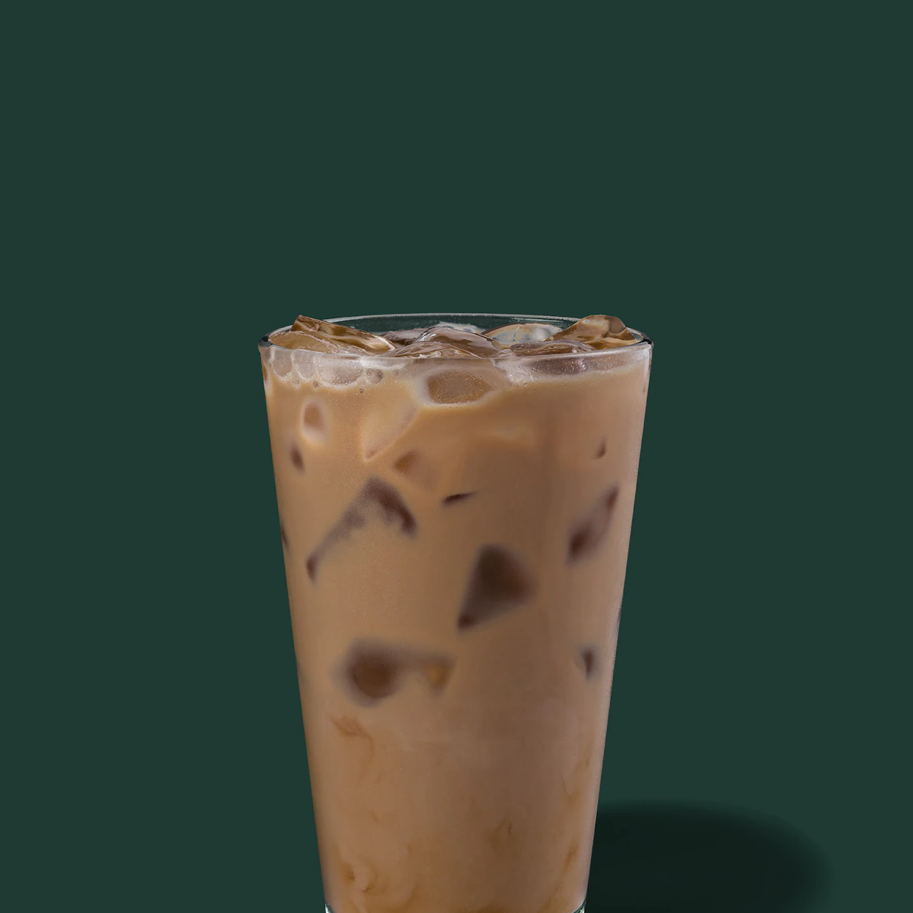

Ana Sayfa
Starbucks, Amerikalı kahve dükkânları zinciridir. Merkezi Seattle, Washington'dadır. Starbucks, adını Moby Dick'teki Starbuck adlı karakterden alır ve simgesi bir denizkızıdır. Türkiye'de ilk şubesini 2003 yılında İstanbul'da Bağdat Caddesi'ne açmıştır.
En Sevilenler
- Cold Brew
- Ice Latte 
- Caffe Misto
- Java Chip Frappuccino